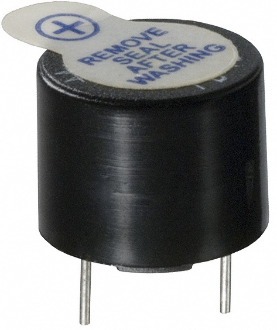
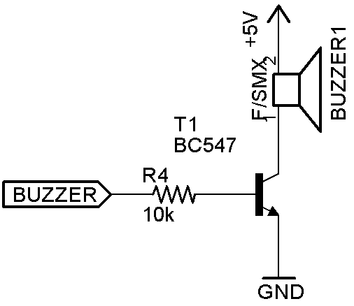
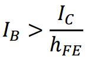
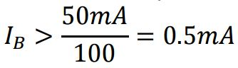

La maggior parte dei buzzer in commercio consumano una corrente talmente elevata(>20mA), che un pin dell’Arduino non può fornire. Quindi per utilizzare un buzzer con Arduino è necessario utilizzare un transistor.

Per mandare in saturazione il transistor NPN deve essere soddisfatta questa condizione:

Per convenzione si sceglie un valore di IB 2-5 volte maggiore.
Ad esempio il buzzer scelto consuma 50mA e il transistor possiede un hFE di 100, quindi:

Viene scelta IB=2mA, quindi RB=10kΩ.
void setup() {
}
void loop() {
tone(13, 220, 1000);
delay(1000);
}